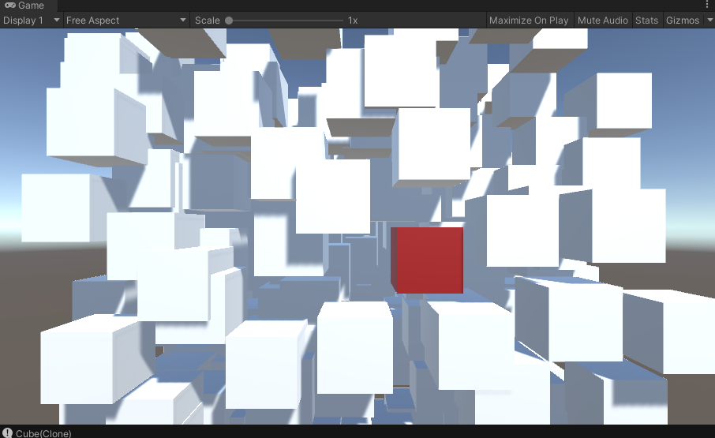

Experience
ViewSonic, Senior Engineer, 2021 - Present
UNIVERSE by ViewSonic
Built multiplayer character customization system
Implement multiplayer features such lobby balancing and whiteboard
Created custom shaders
Built login system with AWS services
Used OpenCV to integrate face detection function
Created developer tools for Unity
Created mesh tools for Maya
Implement multiplayer features such lobby balancing and whiteboard
Created custom shaders
Built login system with AWS services
Used OpenCV to integrate face detection function
Created developer tools for Unity
Created mesh tools for Maya


HTC, VIVE Application developer, 2017 - 2021
VIVE Focus Launcher
Implemented support for UI raycast event and controller pose synchronization
Write native android module, to enable possible wifi search and connection from Unity
Used Jira to track issues and coordinate with SDETs to facilitate development
Used Jenkins to improve build time and reduce platform issues
Write native android module, to enable possible wifi search and connection from Unity
Used Jira to track issues and coordinate with SDETs to facilitate development
Used Jenkins to improve build time and reduce platform issues
Viveport VR
Integrate billing, app library, store catalog APIs with Unity UI
Used named pipe and https to handle IPC between Unity and desktop application
Learned how to use UniRx extension and dependency injection for Unity
Used named pipe and https to handle IPC between Unity and desktop application
Learned how to use UniRx extension and dependency injection for Unity

Infinity VR
Co-work with designers to deliver UI designs and animations
Designed an automated UI testing system for the project to reduce test time before release
Designed an automated UI testing system for the project to reduce test time before release


VIVE Focus3 Launcher
Created UI shaders to achieve soft masking and sprite edge smoothing effects to meet design requirements
Added Web support to enable account login within APP
Added Web support to enable account login within APP


Innovative Center for Cultural and Creative Industries, TKU, Mobile App Developer, 2012-2014
IdeaTV
Main developer for UI and features ( Java and JavaScript )
Crafted an image cache system to improve performance
Built an image partial decode system to ease memory usage on low-end devices
Used Titanium framework to develop cross platform Apps(iOS and Android)
Crafted an image cache system to improve performance
Built an image partial decode system to ease memory usage on low-end devices
Used Titanium framework to develop cross platform Apps(iOS and Android)
Personal Projects
1990s Screen Effect
Retro effect post processing study.
Corner warp
Vignette
Moving CRT scanlines
Corner warp
Vignette
Moving CRT scanlines

Blender Neon effect
Part of my blender study. Used text and curve to create sign, bloom to create the neon look and noise animation to create flickering

Colliderless Raycaster
Realtime raycast hits detector that works without the need of physics
Detects hits in screen space to achieve pixel perfect accuracy
Optimize performance by culling objects with bounding box test
Detects hits in screen space to achieve pixel perfect accuracy
Optimize performance by culling objects with bounding box test


Shader Study - Snowtracks
Hands on study of realtime snowtrack shader
Used tessellation and height map to create track geometry in realtime
Inspired by Peer Play's video
Used tessellation and height map to create track geometry in realtime
Inspired by Peer Play's video
Shader Study - Glowing outline
Added support for VR headset to the fragment shader effect
Used WAVE SDK for VR Camera
Inspired by Daniel John Moran's video
Used WAVE SDK for VR Camera
Inspired by Daniel John Moran's video
Toxic Trip
Contest entry Quarantine Game Jam 2020
Designed and implement UI and some game logic
Teamed up with Church Era author and hsinpa
https://hsinpa.itch.io/toxic-trips
Designed and implement UI and some game logic
Teamed up with Church Era author and hsinpa
https://hsinpa.itch.io/toxic-trips

Android Image Selector
A standalone module for android apps that provides an interface for multiple image selection.

School Projects
3D Gravity Run
A 3-D endless running game set in space as our team’s entry for mobile game design contest held by NTUST.
The game features a control scheme using device orientation. The project was recognized as an excellent work.
The game features a control scheme using device orientation. The project was recognized as an excellent work.
PS Vita Game Prototype
A game concept prototype combining Rubik’s cube and tower defense for PS Vita.
In each level, enemies spawn at a random location and follow a path to another point on the cube.
If enough enemies reached the destination, the player loses. As the level progresses, the enemy’s path changes,
forcing players to rearrange the cube to better position the towers.
Unfortunately, due to time restriction, we only finished bare-bones gameplay elements.
In each level, enemies spawn at a random location and follow a path to another point on the cube.
If enough enemies reached the destination, the player loses. As the level progresses, the enemy’s path changes,
forcing players to rearrange the cube to better position the towers.
Unfortunately, due to time restriction, we only finished bare-bones gameplay elements.
Ogre3D Demo
Another final project for 3D game class in NTUST.
We were tasked with setting up a chain of events of objects interacting with each other and simulate it with a physics engine.
We used Ogre3D for rendering the scene and Bullet Physics Library for simulating physics.
We also implemented water reflection and water waves with custom shaders.
We were tasked with setting up a chain of events of objects interacting with each other and simulate it with a physics engine.
We used Ogre3D for rendering the scene and Bullet Physics Library for simulating physics.
We also implemented water reflection and water waves with custom shaders.
Skeleton Extraction
An implementation of Oscar et al.’s “Skeleton Extraction by Mesh Contraction.”
Mesh Simplification
An implementation of Garland el al.’s “Surface Simplification Using Quadric Error Metrics.”
Mesh Parameterization
Implementation of a simple mesh parameterization for automatic texture mapping.
The user can select and parameterize a patch on a mesh then applies texture to the selected patch.
The user can select and parameterize a patch on a mesh then applies texture to the selected patch.

OpenGL Practice - Face Selector
In this practice, I rendered a 3D model in OpenGL and implemented a feature to let users select parts of the model.

3D Modeling Practice
A chinese styled pavilion 3D model made with Maya.